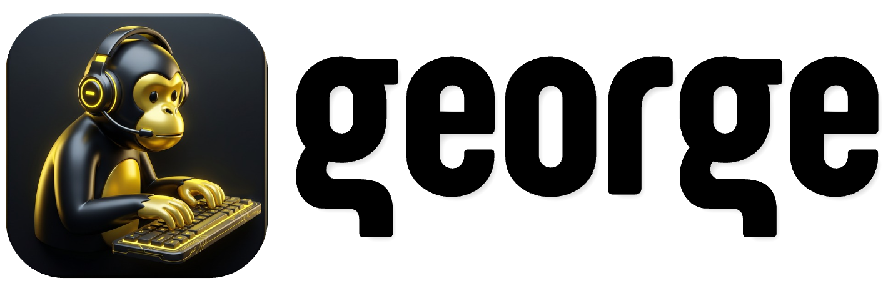
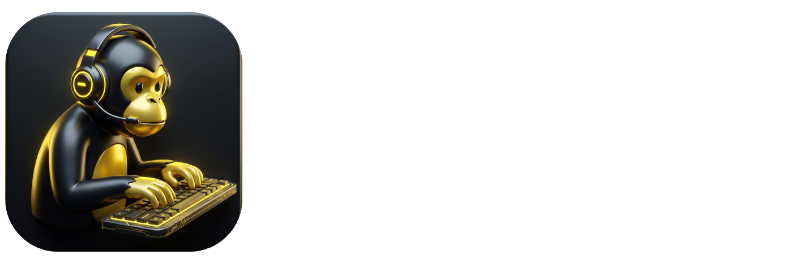

your remote support
Convite
—
Abrindo o George neste computador…
Se o George não abrir sozinho, instale o aplicativo abaixo e cole o código no campo Conectar.
Baixar o George
Instale uma vez; não precisa configurar servidor nem conta para receber suporte.
Versão __GEORGE_VERSION__ · O acesso pelo navegador (web client) chega em uma próxima versão.